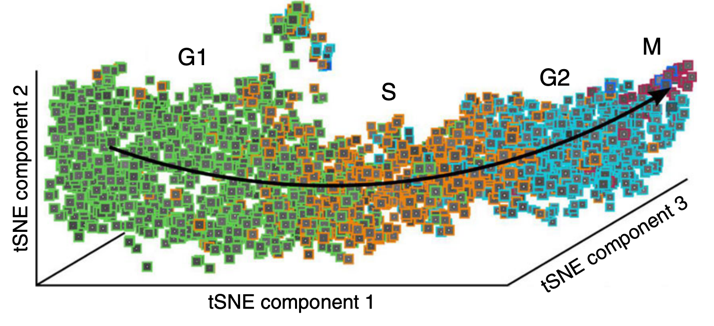

Klasifikace objektů#
Co je klasifikace?#
Jednoduše řečeno, fenotypová klasifikace je o kategorizaci objektů do různých skupin na základě jejich změřených vlastností.
📏 Jak měřit?
Fenotypovou klasifikaci lze provést několika různými způsoby. Jedním ze způsobů, jak ji rozdělit, je klasifikace s učitelem a bez učitele.
Při klasifikaci s učitelem poskytuje uživatel informace o tom, jak by měly různé skupiny objektů vypadat, a to tak, že poskytuje reprezentativní příklady jednotlivých skupin v trénovací sadě dat. Počítač se pak testováním modelů na základě základního souboru trénovacích dat učí, jak přiřazovat objekty do skupin na základě jejich změřených vlastností.
Lze například klasifikovat buňky na základě vizuálního fenotypu a natrénovat klasifikátor strojového učení který umí odvodit jaké rozsahy měření jsou spojeny s jakými třídami. Jedná se o klasifikaci s učitelem, protože člověk poskytuje při tréningu vsstupy jako kolik tříd by mělo existovat, a příklady, jak by každá třída měla vypadat. Příkladem může být anotování podmnožiny buněk, které jsou v různých stádiích mitózy. A klasifikátor, který na základě těchto anotací najde další buňky v těchto stádiích.
V klasifikaci bez dozoru seskupujete objekty na základě jejich změřených vlastností, ale bez jakéhokoli uživatelského vstupu u tom kolik skupin existuje nebo jak by skupiny měly vypadat.
Můžete například měřit stovky nebo tisíce vlastností buněk z mnoha ošetření, což je typické pro rozsáhlé experimenty s buněčnými profily. Dále byste mohli nechat počítač shlukovat buňky do určitého počtu různých skupin na základě podobnosti měření. Jedná se o formu neřízeného shlukování, kdy sledujete, jaké skupiny vzniknou na základě toho, že počítač bere v úvahu pouze jejich měření, a ne anotaci uživatelem. Tyto druhy shlukovacích analýz experimentů mohou poskytnout nové výsledky, ale mohou být také obtížněji interpretovatelné; více informací naleznete v tomto protokolu23.
⚠️ Kde se může něco pokazit?
Správnost měření je důležité Klasifikace může být jednoduchá nebo složitá, ale výsledky vždy závisí na správnosti vašich měření. Z tohoto důvodu platí i zde všechna upozornění z předchozích částí věnovaných měřením.
Stroje jsou líné Klasifikátory strojového učení se nemusí nutně naučit biologicky relevantní rysy, které odlišují objekty od odlišných skupin. Matoucí rysy nebo rysy, které se liší podle vašeho fenotypu, ale nejsou s ním biologicky příbuzné, mohou omezit užitečnost vašeho klasifikátoru a vést k nesprávným závěrům. Pokud například lékaři často dávají pravítka vedle maligně vyhlížejících krtků a ne vedle benigních krtků a pokusí se trénovat klasifikátor strojového učení, aby rozlišil maligní a benigní, model by se mohl naučit klasifikovat obrázky s pravítky jako maligní, aniž by klepal na některou z nich. příslušné rysy krtků. Toto je skutečný příklad 24. Pokud je to možné, zkoumání, na které prvky váš model při klasifikaci objektů spoléhá. Je také důležité standardizovat, jak pořizujete obrázky různých tříd objektů, a zahrnout dostatečně velkou tréninkovou sadu s obrázky se spoustou variací. Nechtěli byste, aby všechny vaše pozitivní buňky pocházely ze vzorků, které jste zobrazili v březnu, a všechny vaše negativní buňky ze vzorků, které jste zobrazili například v lednu.
Porušení předpokladů modelu Pokud používáte klasifikátor strojového učení, různé modely přicházejí s různými zapečenými předpoklady. Pokud začínáte, může být těžké vědět, kterou vybrat. Existují interaktivní nástroje, jako je CellProfiler Analyst 25 a [Piximi](https://www. piximi.app/), které usnadňují trénování klasifikátoru, zvláště pokud nevíte, jak kódovat.
Nepřesné hranice Většina metod klasifikace s učitelem, při nichž uživatel přiřazuje objektům skóre nebo třídu, nakonec považuje každou třídu za zcela samostatnou entitu; biologie je málokdy tak přehledná. Například klasifikátor s učitelem trénovaný pro fázi buněčného cyklu musí přiřadit buňku k jedné fázi, ale ve skutečnosti postup buněčným cyklem není dokonale přepínatelný proces, jak lze znázornit měřením jednotlivých buněk (zbarvených podle jejich třídy dané lidským pozorovatelem). Ke klasifikaci souvislejších fenotypů může být zapotřebí sofistikovanějších metod.
{kind=link}

Obr. 7 Přísné rozdělení do tříd pod dohledem může být pro kontinuální biologické procesy složité. Upraveno podle Eulenberg, P., Köhler, N., Blasi, T. et al. Reconstructing cell cycle and disease progression using deep learning. Nat Commun 8, 463 (2017) 26#
📚🤷♀️ Kde se mohu dozvědět více?
📄 Data-analysis strategies for image-based cell profiling 27
📄 Scoring diverse cellular morphologies in image-based screens with iterative feedback and machine learning 28
🎥 iBiology video series: Measurement and Phenotype Classification
📄 Interpreting Image-based Profiles using Similarity Clustering and Single-Cell Visualization 23